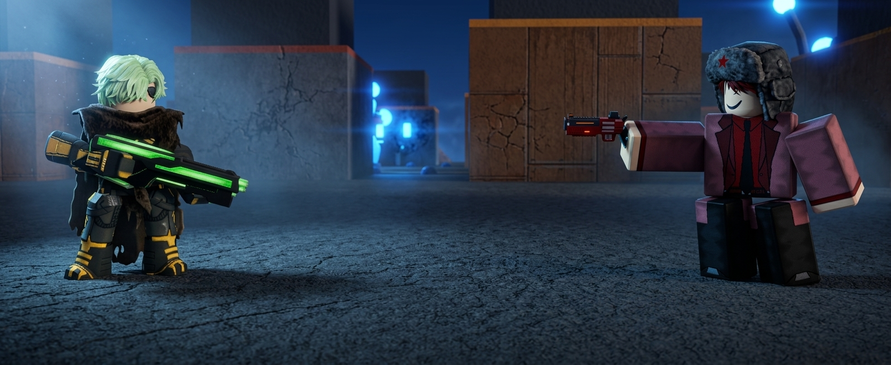

The Varkuun Incident — Chapters 6–10

Chapter 6 — The Emperor Arrives
The ambient dust of Varkuun’s shattered capital shifted as a shadow cut through the horizon. Angelo Pierce, the former Space Pirate Emperor, landed smoothly near the group. Ral Awakening, the Crimson Swordsman, lowered his glowing blade slightly, while Kole Rogue, the Arsonist, rested his massive fire axe over his shoulder. Tom Letanio stood vigilant alongside them, the blue aura of his stand, Indigo Fist, flickering gently around his arms.
Angelo adjusted his coat, scanning his comrades with an unreadable expression before locking eyes with Princess Anuket.
Angelo: “You’re making too much noise. The entire sector could track your astral signatures.”
Chapter 7 — Detection & Contingencies
As the sharpest mind among the Guardians, Angelo didn't rely solely on sight or raw power. He tapped his wrist-bound console, analyzing micro-fluctuations in the local atmospheric thermal readings and quantum frequencies.
His eyes narrowed as the scan returned a sequence of encrypted signatures he knew all too well. Having already drafted a series of master contingency plans for every faction in the galaxy, Angelo immediately activated a localized jamming field to disable incoming orbital tracking.
Angelo: “Drop your guards. We’re not alone. Vexx Empire signatures are cloaked three hundred meters north... but I’ve already neutralised their ambush grid.”
Tom charged his blue phoenix energy, time-stopping capabilities at the ready. Kole tightened his grip on his fire axe, and Ral stepped forward, blade gleaming crimson.
Chapter 8 — Standoff with the Administrator
The air shimmered as distortion fields collapsed, revealing a battalion of Vexx soldiers led by Vexx Administrator Rick Astro. Rick stepped forward, his cybernetic visor glowing with bitter contempt.
Rick Astro: “Angelo Pierce. The Emperor who turned his back on his own legacy to play hero with lower lifeforms.”
Angelo didn't flinch, remaining completely silent as Rick took another step, his tone dripping with betrayal.
Rick Astro: “I used to respect you, Pierce. We all did. You built the empire into a terror that made galaxies tremble. Now look at you... standing alongside Guardians like a common traitor.”
Chapter 9 — Silence the Administrator
Rick Astro raised his hand to order his battalion to execute an orbital strike, unaware that Angelo’s pre-planned contingency had already offline-locked their dreadnought relays.
Rick Astro: “Your betrayal ends today, Angelo! The Vexx Empire will—”
Angelo: “Shut up.”
In a fraction of a second—faster than Tom’s time-stopping reflexes or Rick’s cybernetic tracking—Angelo executed his primary field protocol. A single, lethal shot echoed through the canyon before Rick could finish his sentence.
Rick Astro collapsed instantly, his life force extinguished before his body hit the scorched sand. The surrounding Vexx forces scattered in terror, their chain of command entirely dismantled by Angelo’s foresight.
Chapter 10 — Assessing the Threat
Angelo holstered his weapon without looking back at Rick’s fallen body. He turned directly toward Princess Anuket, bypassing the shock on everyone else's faces.
Angelo: “Anuket. Give me an accurate count. How many Crimson Fears did the Vexx Empire manage to steal from the vault? I need exact numbers to prep our counter-contingency.”
Anuket adjusted her glowing royal armor, her composure returning as she realized the gravity of the situation.
Anuket: “More than enough to destroy an entire star system... if they learn how to unlock their power.”
End of Chapters 6–10
With Rick Astro eliminated and the Vexx threat confirmed, Angelo relies on his contingency plans to ensure the Guardians stay three steps ahead of the Vexx Empire.